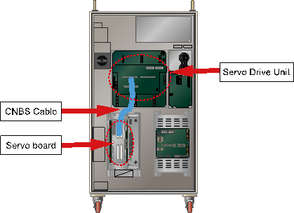

Warning
Be cautious. Examination while the power is on may cause an electrocution.
Previous error code: E0113 (○ axis) Overcurrent
1.1.67.1. Outline
The current (UV-phase current) that flows through the motor or the drive unit is larger than the set limit value. When the current that generated by the Servo control to operate the Robot (or the drive unit) exceeds the allowed safe voltage range, the Servo Board will detect an error and immobilize the Robot.
1.1.67.2. Causes and examine methods
|
(1) Check if the axis with an error has mechanical interference with other equipment.
(2) Examine the motor power line. n Check the wiring that connects the robot and controller. n Check the robot's internal wiring. n Check the controller's internal wiring.
(3) Examine the CNBS cable between the Controller's internal Servo Board and the Drive Unit.
(4) Replace other components. |
(1) Check if the axis with an error has mechanical interference with other equipment.
This error may occur if the Robot had a mechanical interference or collisions. If the Robot is out of the operation area, please move it back into the operation area by using a manual control.
(2) Examine the motor power line.
Please turn off the primary power and remove the U, V, and W of drive unit for the corresponding axis and examine if short circuit exists in each phase. Please use equipment such as the multi meter (tester) and examine each phase's wiring one by one.
|
Warning Be cautious. Examination while the power is on may cause an electrocution. |
n Check the wiring that connects the robot and controller.
Please remove the wirings that connect the controller, Robot or the drive unit to examine each phases (U, V, W) for ground, or a short circuit. If a short circuit is found, please replace the wire.
Figure 1.186 Basic Installation Diagram of the Robot and Control Period
n Check the Robot's internal wiring
Examine for a short circuit, faulty on a wiring that connected to Robot's internal motor is required
Figure 1.187 Robot's Internal Wiring
n Check the Controller's internal wiring.
Examine on a controller's internal AMP and installed wiring is required.
(a) Hi5a-S00 controller
(b) Hi5a-N00 controller
Figure 1.188 Controller internal side (Power unit)
(3) Examine the CNBS cable between the Controllers' internal Servo Board (DSP board) and the Drive Unit.
Please examine if the CNBS cable is installed properly. If the cable is not installed properly, or the cable is faulty, this error may occur.
(a) Hi5a-S00 controller

(b) Hi5a-N00 controller
Figure 1.189 Controller internal side (CNBS cable)
(1) Replace other components
Replace the component in order of Servo Board (BD544) → Servo Drive Unit → Motor to confirm the occurrence of an error.
(a) Hi5a-S00 controller
(b) Hi5a-N00 controller
Figure 1.190 Replacing other parts (such as servo boards, servo drive units, and motors)